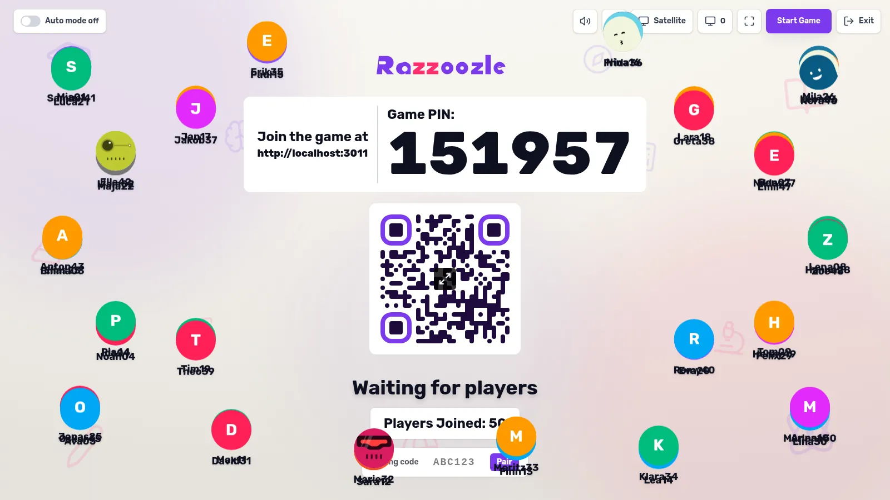
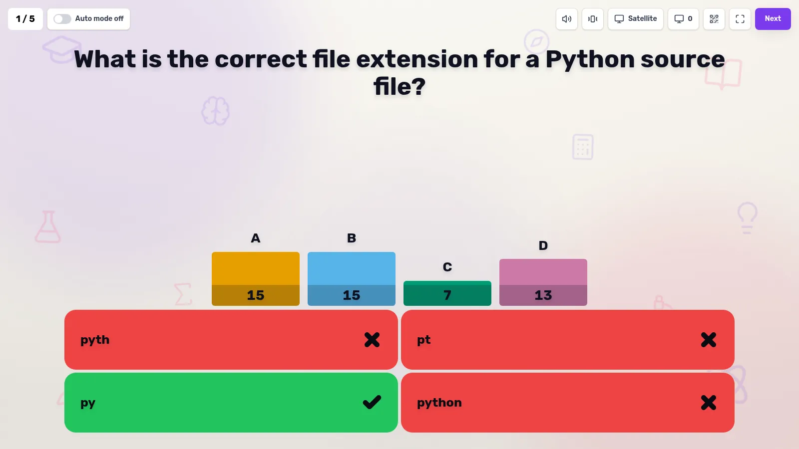
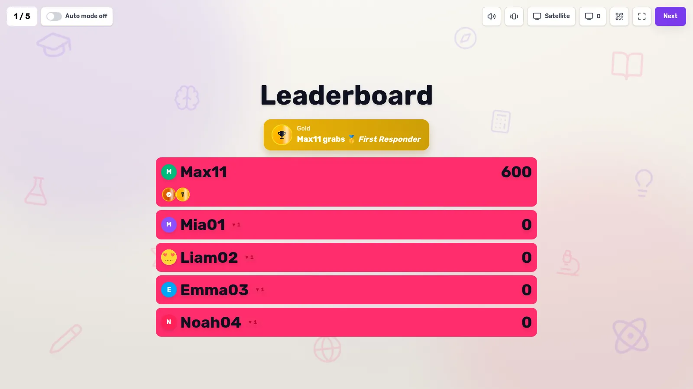
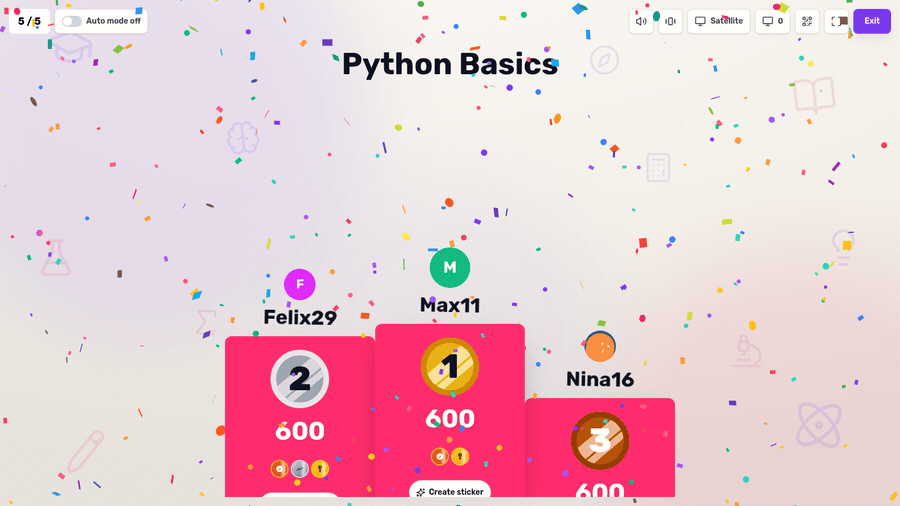
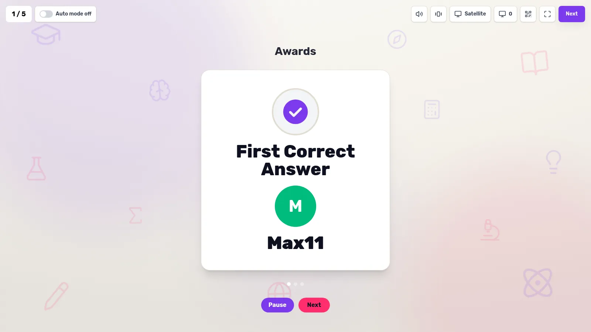
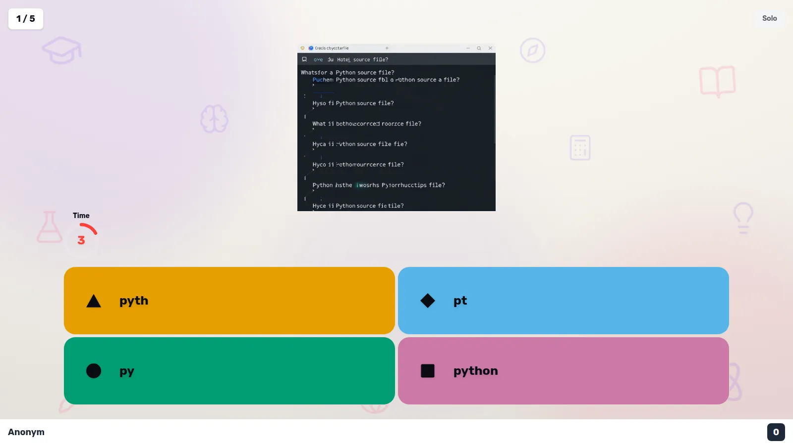
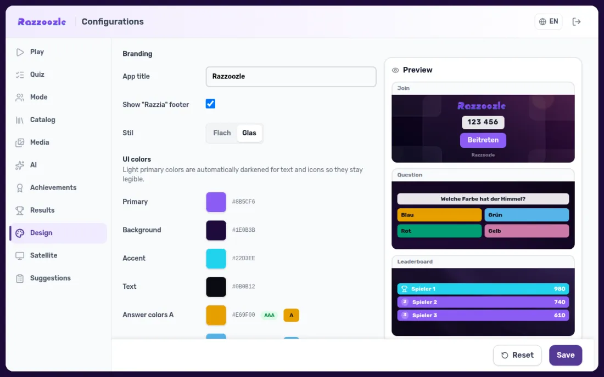

Presenter + phone, in real time
A host opens a game on the big screen, players join by PIN on their phones — colored answer tiles with shapes, a circular countdown and an animated podium.
Open-source · self-hosted
A self-hosted, real-time quiz game for classrooms, events and game nights. A host opens a game on the big screen, players join by PIN on their phones, and everyone races to answer.
Try it now
Hover over the demo to start the countdown timer — watch the presenter screen reveal the answer on the big display while the phone locks in the player's response.
See it in action

Host on the big screen; players scan a QR code or type the game PIN and play from their own phones — no app, no signup. Load-tested to hundreds of players.

Four colour-and-shape answer tiles and a live timer on every phone — then the whole room watches the answer distribution land on the big screen.

Live leaderboards with overtake animations, 15 achievements, medals, streaks and sound — plus a personal trophy gallery you keep between games.

Every game ends on an animated winners' podium — confetti, medals and one-tap shareable winner stickers.

After each round, a recap; at the end, the awards — first responder, biggest climber, longest streak, trophy collector and more.

Share a solo link and play any quiz alone at your own pace, with its own score history — perfect for practice or async play.

Recolour the whole game from the manager Design tab — colours, per-view backgrounds, logo, radius — or drop in a downloadable skeleton ZIP theme. Flat cream by default, optional violet glass.
Built by AI
Razzoozle is developed almost entirely by AI coding agents, orchestrated by human oversight. A diverse team of specialized models and tools works together to build features, test, review and deploy.
Orchestration & review
Full-stack implementation
Code refinement & fix
Rust backend implementation
Long-context review & judging
Qwen, DeepSeek, Nemotron
OpenVINO on Intel Arc
End-to-end game testing
Humans review and merge every commit. AI augments speed and quality, not replaces judgment.
Powered by Rust
The Rust server is now the default backend. It shares a single Postgres database with the Node server and speaks the exact same socket.io protocol — no client changes needed.
Full scored multi-question games, all 7 question types, player reconnect, manager auth, quiz disk loading, AI media and a real-game CI gate that plays 100-player games on every deploy.
Node and Rust backends run side-by-side, share one Postgres database as the source of truth, and are client-selectable. Rust is now the global default.
The game's state machine (Lobby → Round → Reveal → Scoreboard) is compile-time-checked. Single static binary, no runtime overhead, easier to ship as a Tauri desktop app.
~200 socket.io events as Rust types, ts-rs auto-generates TypeScript bindings. Rust is the source of truth — zero drift between server and client types.
Under the hood
A pnpm monorepo — React + Vite + Tailwind on the front, dual backend (Node.js or Rust), shared Zod-validated types, shipped as a single Docker image.
 React
React TypeScript
TypeScript Vite
Vite Tailwind CSS
Tailwind CSS PWA
PWA Motion
Motion Node.js
Node.js Socket.IO
Socket.IO Rust (default)
Rust (default) Postgres
Postgres Zod
Zod i18next
i18next Prometheus
Prometheus Docker
Docker pnpm
pnpm Vitest
VitestBuilt for game nights
Classic Kahoot-style play, rebuilt around a clean flat cream design — with gamification, teams, solo practice and a fully themable UI.
A host opens a game on the big screen, players join by PIN on their phones — colored answer tiles with shapes, a circular countdown and an animated podium.
15 achievements, medals, streaks, confetti and sound chimes, plus a personal trophy gallery and an animated end-game awards recap.
Red, blue, green and yellow teams with a live team leaderboard — or practise any quiz alone via a solo share link with its own score history.
Every player gets a generated DiceBear avatar — pick a style and reroll, or upload your own. Avatars float around the lobby and show up on leaderboards, the podium and the awards.
Rich Open-Graph link previews, a result page with play-it-yourself CTAs, downloadable winner stickers, plus a manager-installable plugin and addon system.
A live manager Design tab — colours, per-view backgrounds, logo, radius and a flat ⇄ glass toggle. Download or upload a whole-game theme as an LLM-readable skeleton ZIP.
Installable and offline-aware, with optional vibration feedback on player phones for the countdown and answers — reduced-motion aware throughout.
Generate question and theme imagery on-device via ComfyUI (Z-Image), or plug in a cloud provider — API keys always stay server-side.
A /display projector view, low-latency mode, crash-recovery and reconnect, and an MCP server for AI-tool control — hardened and load-tested to 600 players.
Ships as a Docker image you run with one command. Prometheus metrics and structured pino logs are built in, so you can actually watch a live game's health.
Author quizzes in the manager: multiple question types, a media picker for images, and an importable quiz catalog — no JSON wrangling required.
Full UI in English, German, Chinese, Spanish, French and Italian with an instant switch — players and hosts each get their own language.
A new question type — players tap shuffled word chunks to rebuild a sentence in the right order, great for languages, definitions and sequences.
However you play
Host on the big screen.
Red vs blue vs green vs yellow.
Practice or share a quiz.
Tap a colored shape to answer.
Spell it out on your keyboard.
Drag to the closest number.
Clone the repo and run it with Docker Compose. Your data stays in a local config volume — put it behind your own reverse proxy for TLS and a public name.
git clone …/Razzoozle && cd Razzoozle && docker compose -f compose.node.yml up -d